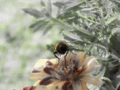
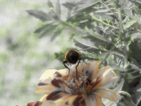

Next Photo
-
Vote
The Lives of Wood Worms
This tree was eaten by a colony of wood worms. The Worms left their marks in the bark in the form of intricate designs. The texture of the wood is soft leaving the lines in the wood contrasting that texture. These worms were definately quite the artists. The greyscale nature of the photo adds to the effect of the texture.
More...
Title: The Lives of Wood Worms
Description: This tree was eaten by a colony of wood worms. The Worms left their marks in the bark in the form of intricate designs. The texture of the wood is soft leaving the lines in the wood contrasting that texture. These worms were definately quite the artists. The greyscale nature of the photo adds to the effect of the texture.
Keywords: wood worms designs intricate texture greyscale
Hidden: n
Date added: Sun Apr 09 18:42:08 CDT 2006
Date taken: Sun Apr 09 15:41:23 CDT 2006
Camera: FUJIFILM.FinePix S5100 .
Resolution: 2272x1704
Mode:
Shutter speed: 817/100
Flash: 16
Exposure time: 10/2800
Iso: 100
Metering: 5
Aperture: 430/100
Focal length: 1540/100
Artist: NathanielGuy Mahieu
Copyright: 2006 NathanielGuy Mahieu
Views: 4793

 
